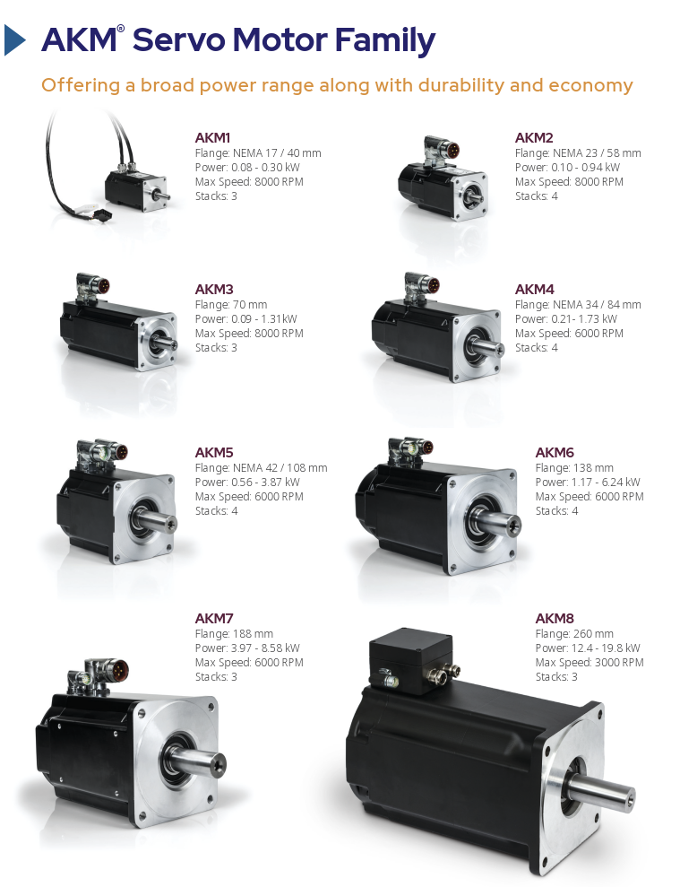

Données techniques et spécifications
Servomoteurs KOLLMORGEN
Spécifications techniques des servomoteurs KOLLMORGEN
| Modèle | Taille de bride | Plage de puissance (kW) | Vitesse max. (tr/min) | Longueur de pile de stator |
|---|---|---|---|---|
| AKM1 | NEMA 17 / 40 mm | 0,08 - 0,30 kW | 8000 tr/min | 3 |
| AKM2 | NEMA 23 / 58 mm | 0,10 - 0,94 kW | 8000 tr/min | 4 |
| AKM3 | 70 mm | 0,09 - 1,31 kW | 8000 tr/min | 3 |
| AKM4 | NEMA 34 / 84 mm | 0,21 - 1,73 kW | 6000 tr/min | 4 |
| AKM5 | NEMA 42 / 108 mm | 0,56 - 3,87 kW | 6000 tr/min | 4 |
| AKM6 | 138 mm | 1,17 - 6,24 kW | 6000 tr/min | 4 |
| AKM7 | 188 mm | 3,97 - 8,58 kW | 6000 tr/min | 3 |
| AKM8 | 260 mm | 12,4 - 19,8 kW | 3000 tr/min | 3 |
Secteurs et applications :
Industries cimentière, chimique et pharmaceutique
Construction, agroalimentaire et boissons, infrastructures portuaires
Métallurgie, exploitation minière et extraction de matières premières
Pétrole et gaz, manutention des matériaux
Production de plastique et de caoutchouc, énergie
Industrie des pâtes et papiers, traitement de l'eau et des eaux usées, énergie éolienne.

Vous trouverez ci-dessus le tableau détaillé des paramètres pour les servomoteurs KOLLMORGEN.